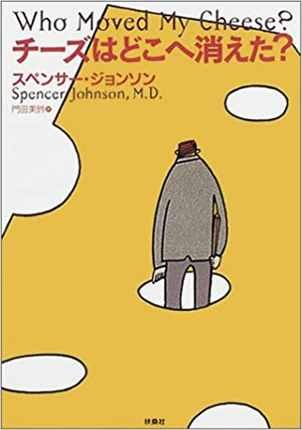

はじめに
2019年も残すところあとわずかとなりました。
個人的に今年は挫折と成長の1年でした！
やる予定のなかった就活をして、奇跡的に第1志望の内定を頂いたり、最高の仲間たちと起業してみたり...
その中で人間関係や自分の能力のなさで悩むことも多々ありました...
そんな1年の中で、自分を成長させてくれたと思っている本5選を紹介したいと思います！
皆さんの成長の糧、ひいては人生の転換点になれるように全力で紹介するので見ていただけると嬉しいです！
個人的に今年は挫折と成長の1年でした！
やる予定のなかった就活をして、奇跡的に第1志望の内定を頂いたり、最高の仲間たちと起業してみたり...
その中で人間関係や自分の能力のなさで悩むことも多々ありました...
そんな1年の中で、自分を成長させてくれたと思っている本5選を紹介したいと思います！
皆さんの成長の糧、ひいては人生の転換点になれるように全力で紹介するので見ていただけると嬉しいです！
本の紹介
1.チーズはどこへ消えた
この本のメイン部分は2匹のネズミと2人の小人が、『チーズ』を探し〈迷路〉のなかを探検するものです。
性格の異なる4つのキャラクターが生きるためにどのような行動をとるのか？
自分はどのキャラクターに似ているのか、その結果どのような人生になるのか？
自分を客観的な視野で見れて、たくさん考えさせられた作品です。
性格の異なる4つのキャラクターが生きるためにどのような行動をとるのか？
自分はどのキャラクターに似ているのか、その結果どのような人生になるのか？
自分を客観的な視野で見れて、たくさん考えさせられた作品です。

2.アドラー心理学入門
アドラー心理学とは、欧米ではフロイト、ユングとともに「心理学の3大巨頭」と呼ばれているアルフレッド・アドラーが打ち立て、後継者が発展させてきた「個人心理学」と呼ばれる理論体系です。
フロイトが掲げる古典的な心理学の体系とは大きく異なり、大きく分けて5つの理論が掲げられています。
その5つの理論とは、
フロイトが掲げる古典的な心理学の体系とは大きく異なり、大きく分けて5つの理論が掲げられています。
その5つの理論とは、
- 自己決定性
- 目的論
- 全体論
- 認知論
- 対人関係論
3.嫌われる勇気
アドラーが提唱する心理学のノウハウを青年と哲人の対話形式で描いた作品。
対話形式だからこそ理解しやすく、また、読者が感じる疑問点を青年が代わりに哲人に問いながら話が進むので、とても自分の中に落とし込みやすくなっています。
アドラー心理学を少し理解していると反芻でき、より理解を深めることができると思います。
是非「アドラー心理学入門」などと一緒に読んでみてください。
対話形式だからこそ理解しやすく、また、読者が感じる疑問点を青年が代わりに哲人に問いながら話が進むので、とても自分の中に落とし込みやすくなっています。
アドラー心理学を少し理解していると反芻でき、より理解を深めることができると思います。
是非「アドラー心理学入門」などと一緒に読んでみてください。
4.ゼロ~なにもない自分に小さなイチを足していく~
ライブドア事件ですべてを失ったホリエモンこと、堀江貴文氏が語る衝撃の作品。
もしあなたが「変わりたい」と願っているなら、ゼロの自分に、イチを足そう。
掛け算を目指さず、足し算から始めよう。
人は変わらない。自分を変え、周囲を動かし、自由を手に入れるための唯一の手段は「働くこと」である。
背伸びしすぎていた自分に、地に足付けた歩みをすればいいと教えてくれた作品です。
もしあなたが「変わりたい」と願っているなら、ゼロの自分に、イチを足そう。
掛け算を目指さず、足し算から始めよう。
人は変わらない。自分を変え、周囲を動かし、自由を手に入れるための唯一の手段は「働くこと」である。
背伸びしすぎていた自分に、地に足付けた歩みをすればいいと教えてくれた作品です。
5.成功者の告白
起業をし成功していく道のりには、いくつもの地雷が埋められている。
企業の成長と失敗、ぶつかる課題には実は法則があった。
一人の起業家が数々の問題を乗り越え、成功をつかみ取るストーリーとともに、起業について学べる作品です。
企業の成長と失敗、ぶつかる課題には実は法則があった。
一人の起業家が数々の問題を乗り越え、成功をつかみ取るストーリーとともに、起業について学べる作品です。
おわりに
最後までご覧いただいた皆様、ありがとうございました。
今回は自分が2019年に読んだ自己啓発に近いような本の中で、自分を少しでも変えてくれたと感じる作品を5つに厳選して紹介してみました。
来年以降読もうと思っている作品や、2019年に読んだ技術書でよかったものなどを今後も紹介していけたらと思っています。
今回は自分が2019年に読んだ自己啓発に近いような本の中で、自分を少しでも変えてくれたと感じる作品を5つに厳選して紹介してみました。
来年以降読もうと思っている作品や、2019年に読んだ技術書でよかったものなどを今後も紹介していけたらと思っています。